People
Eleven people are working in the lab this semester, on parts of one problem rather than on eleven problems, with one more joining in the spring.
The work interlocks by design. Mackenzie acquires the calcium recordings. Keke curates them against WINK, using the modules Chandler writes. Marcos is building the edited cell line the calcium work needs, so that anything found can be attributed to dystrophin. He and Nora score the same muscle cells independently, so human and machine can be compared. Naga is asking in smooth muscle the question Danny answered in striated. That is why people here appear on each other's papers.
Portraits are painted rather than photographed, a house style we adopted so that everyone appears the same way.
Principal investigator
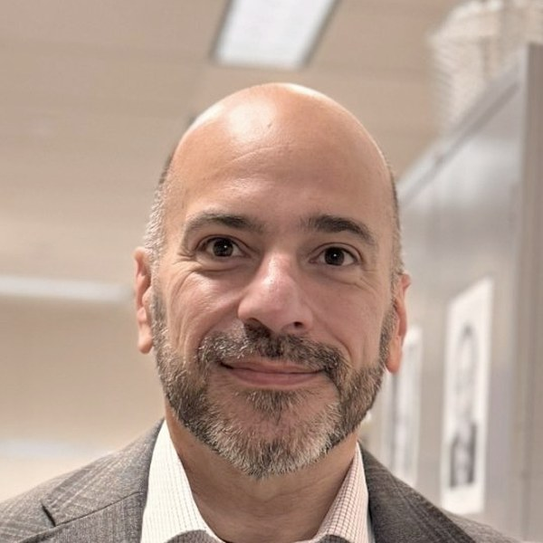
Andrés Vidal-Gadea, PhD Professor of Molecular Neuroethology. Associate Director of Undergraduate Studies. Works at the join between biology and physics. How does a genetic lesion change muscle's ability to withstand mechanical load, and how does a nervous system read a magnetic field? Outstanding University Researcher 2025, Outstanding College Researcher 2024, Faculty Mentor Award from the Louis Stokes Alliance for Minority Participation 2018.Graduate students
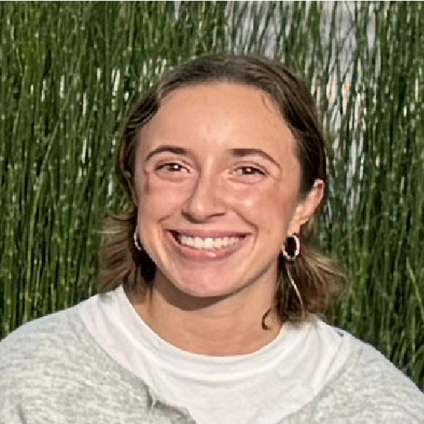
Mackenzie Jones MS candidate and the lab's lead worm person. Runs the multi-channel live calcium imaging on the confocal. Owns the RGBCaMP reporter work, comparing calcium kinetics across muscle compartments in healthy and dystrophic animals. Carries the dystrophin isoform experiments, and has begun mouse muscle dissection.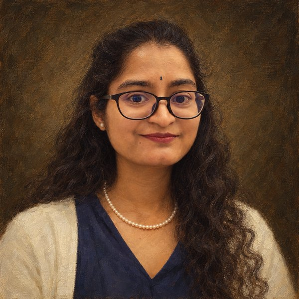
Naga Nidadavolu Graduate student on smooth muscle, in both human cells and the worm. Runs calcium imaging of smooth muscle myoblasts under pharmacological stimulation. Her question is whether the calcium defects found in striated muscle appear in smooth muscle too. Smooth muscle is the newest arm of the program.Undergraduate researchers
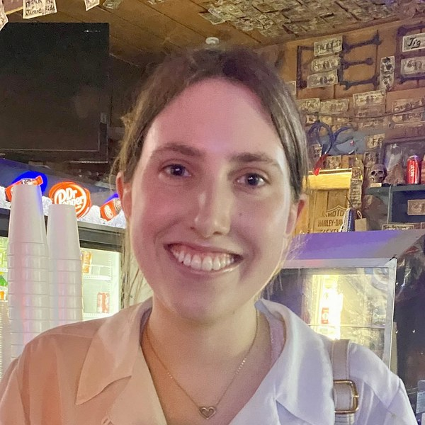
Nora Armstrong Co-author on the study of animals raised for six generations under Mars analog gravity and hypomagnetic fields. She ran its revision experiments. She now outlines muscle cells for the lab's human to machine comparison.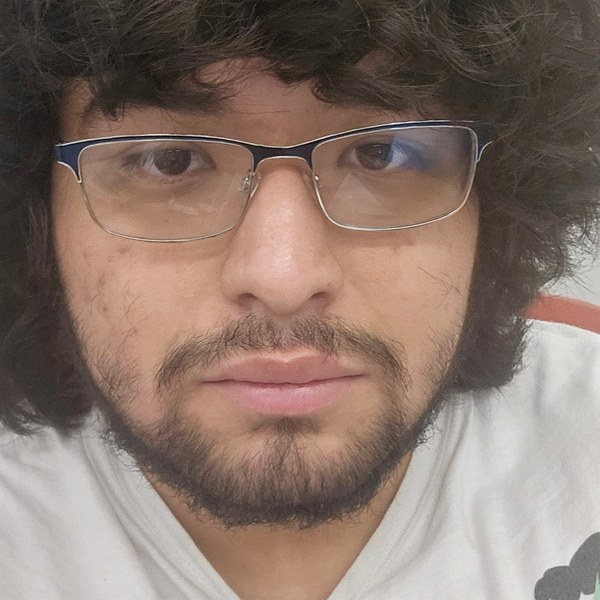
Marcos Perez-Rodriguez Using CRISPR to build an isogenic dystrophic human muscle cell line. It starts from the same healthy line used in the lab's calcium set point work, so the two differ in one gene and nothing else. He is also an independent scorer on the muscle cell manuscript.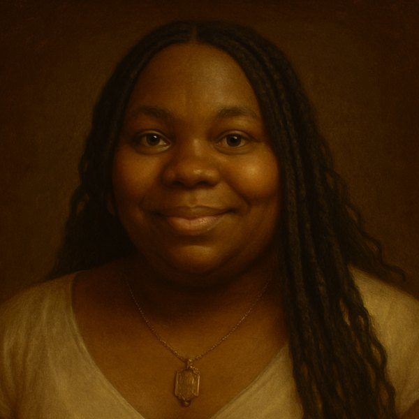
Keke Velez Runs the worm hotel, filming single animals performing distinct muscle specific behaviors, and curates the resulting recordings against WINK's output, correcting frames the machine gets wrong. Ran an RNA interference screen for genes that alter branching in muscle.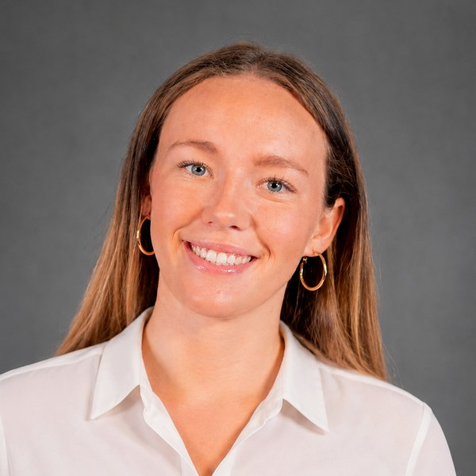
Chandler Huffman Writes the lab's Python worm tracker and WINK analysis modules. She is first author on a technical manuscript about them. A Division I student-athlete, heading for a PhD in biomedical engineering.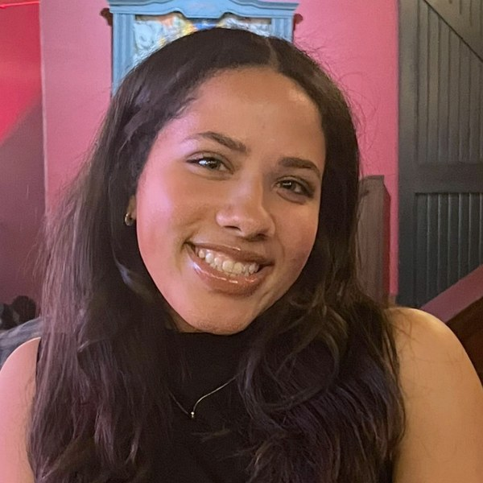
Ava Carroll Joined in Fall 2026 on the Duchenne muscular dystrophy program, learning the worm assays and the calcium imaging workflow.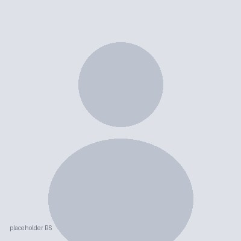
Brooke Stewart Working on rescue of a calcium pump in dystrophic animals. She designed the long range PCR primers that amplify the genomic locus for the rescue construct.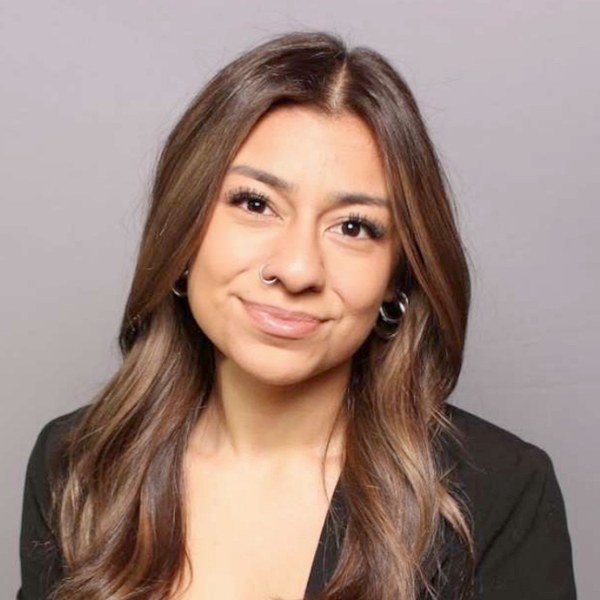
Angelina Vera Undergraduate researcher on the Duchenne muscular dystrophy program.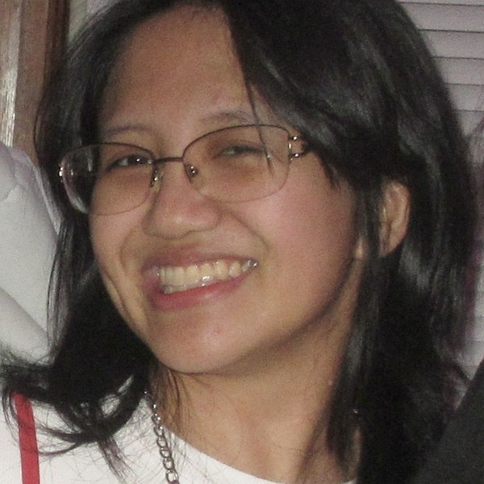
Elyssa Guleng Undergraduate researcher on the Duchenne muscular dystrophy program.Before you write to someone
If you are a prospective student, write to Andrés rather than to a lab member. If you are looking for a former member, the alumni page records where people went.